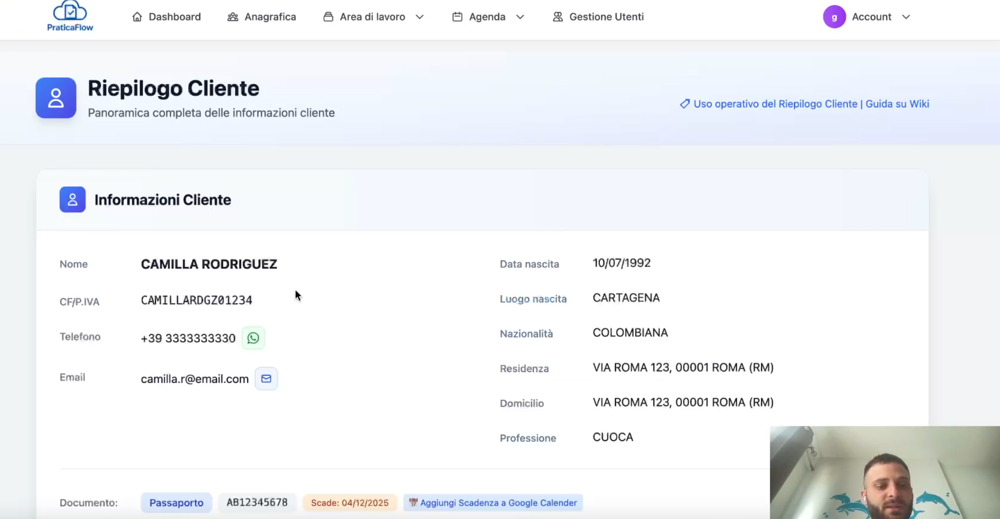

Riepilogo Cliente in PraticaFlow: tutto in una sola pagina

Con il Riepilogo Cliente hai una visione istantanea di tutto ciò che riguarda un cliente: pratiche attive, documenti, appuntamenti, task, pagamenti e note rilevanti. Una sola pagina per passare all’azione senza aprire dieci schede diverse.
È la vista ideale per chi deve rispondere velocemente al telefono, dare aggiornamenti o pianificare i prossimi passi.
Cosa trovi nel Riepilogo
- Pratiche collegate: stato, priorità, scadenze e accesso rapido al dettaglio.
- Documenti: ultimi caricamenti, checklist richieste, download in 1 click.
- Appuntamenti & Task: cosa è stato fatto e cosa c’è in agenda.
- Pagamenti: importi, scadenze e storico incassi.
- Note e contatti: info operative sempre a portata.
Come velocizza il lavoro
- Apri il Riepilogo dal cliente cercato con ricerca istantanea.
- Controlla in 5 secondi lo stato delle pratiche e le scadenze.
- Aggiungi un task o un appuntamento collegato alla pratica corretta.
- Verifica i pagamenti e registra eventuali incassi.
Tutto rimane tracciato e collegato: niente più salti tra cartelle e fogli.